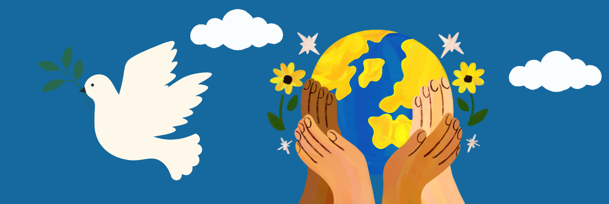
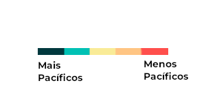
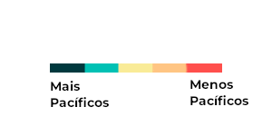
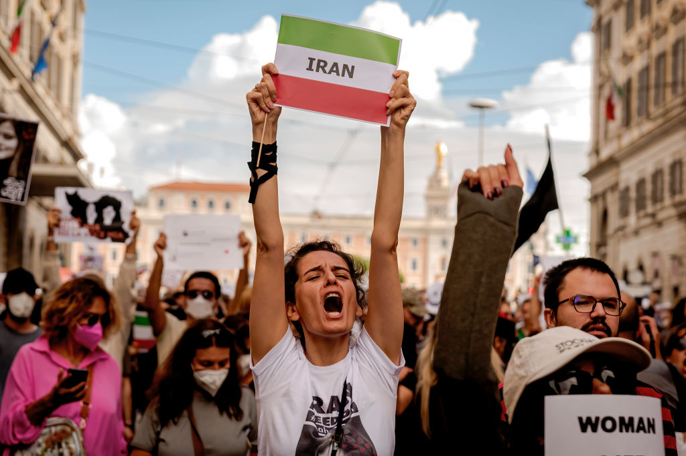
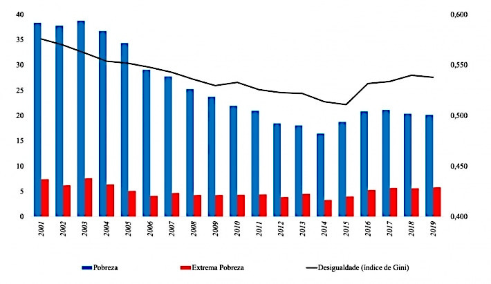
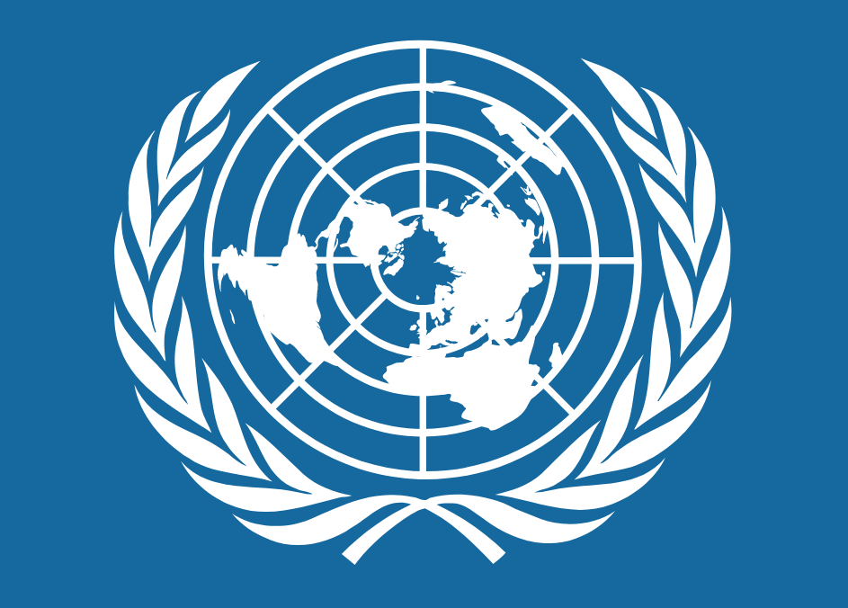

Objetivo de Desenvolvimento Sustentável
Paz, Justiça e Instituições Eficazes
Promover sociedades pacíficas e inclusivas o desenvolvimento
sustentável, proporcionar o
acesso
à justiça para todos e construir
instituições eficazes, responsáveis e inclusivas a todos os
níveis.

O que é o objetivo 16 da ODS?
ODS 16 refere-se ao Objetivo de Desenvolvimento Sustentável número 16, que faz parte da Agenda 2030 para o Desenvolvimento Sustentável estabelecida pelas Nações Unidas. Essa agenda é composta por 17 objetivos interconectados, que visam abordar os principais desafios sociais, econômicos e ambientais que o mundo enfrenta. O ODS 16 tem como objetivo "promover sociedades pacíficas e inclusivas para o desenvolvimento sustentável, proporcionar o acesso à justiça para todos e construir instituições eficazes, responsáveis e inclusivas em todos os níveis". Em outras palavras, busca-se estabelecer a paz, a justiça e instituições sólidas como base para o desenvolvimento sustentável.
16.1 Reduzir significativamente todas as formas de violência e as taxas de mortalidade relacionada em todos os lugares.
16.2 Acabar com abuso, exploração, tráfico e todas as formas de violência e tortura contra crianças.
16.3 Promover o Estado de Direito, em nível nacional e internacional, e garantir a igualdade de acesso à justiça para todos.
16.4 Até 2030, reduzir significativamente os fluxos financeiros e de armas ilegais, reforçar a recuperação e devolução de recursos roubados e combater todas as formas de crime organizado.
16.5 Reduzir substancialmente a corrupção e o suborno em todas as suas formas.
16.6 Desenvolver instituições eficazes, responsáveis e transparentes em todos os níveis.
16.7 Garantir a tomada de decisão responsiva, inclusiva, participativa e representativa em todos os níveis.
16.8 Ampliar e fortalecer a participação dos países
em desenvolvimento nas instituições de governança
global.
16.9 Até 2030, fornecer identidade legal para todos, incluindo o registro de nascimento.
16.10 Assegurar o acesso público à informação e proteger as liberdades fundamentais, em conformidade com a legislação nacional e os acordos internacionais.
16.a Fortalecer as instituições nacionais relevantes, inclusive por meio da cooperação internacional, para a construção de capacidades em todos os níveis, em particular nos países em desenvolvimento, para a prevenção da violência e o combate ao terrorismo e ao crime.
16.b Promover e fazer cumprir leis e políticas não discriminatórias para o desenvolvimento sustentável.
PAZ
A paz é um valor fundamental para a humanidade e um componente essencial do desenvolvimento sustentável. No contexto do ODS 16, a paz refere-se a sociedades pacíficas e inclusivas, livres de violência e conflitos, onde os direitos humanos são respeitados, as instituições são eficazes e responsáveis, e a justiça prevalece. A paz não é apenas a ausência de guerra, mas também implica a construção de relações harmoniosas entre indivíduos, comunidades e nações. Ela é construída sobre a base do diálogo, da tolerância, do respeito mútuo e da cooperação. A paz promove a estabilidade, a segurança e o progresso, permitindo que as pessoas vivam suas vidas com dignidade e prosperidade. Promover a paz requer ações em múltiplas frentes. Isso inclui investir em prevenção de conflitos, resolver disputas de forma pacífica, construir instituições eficazes e responsáveis, combater a corrupção, promover a inclusão social e garantir o acesso à justiça para todos. Além disso, a educação para a paz desempenha um papel crucial na transformação de mentalidades, promovendo o entendimento intercultural e construindo uma cultura de paz desde cedo. A paz não é apenas um fim em si mesma, mas também é um meio para alcançar outros Objetivos de Desenvolvimento Sustentável. Ela está intrinsecamente ligada à erradicação da pobreza, à promoção da igualdade de gênero, ao acesso à educação de qualidade, à proteção do meio ambiente e a outros pilares do desenvolvimento sustentável. Ao priorizarmos a paz como um objetivo global, estamos construindo um mundo melhor para as presentes e futuras gerações. Juntos, podemos trabalhar em direção a sociedades pacíficas, inclusivas e justas, onde todos tenham a oportunidade de prosperar e viver em harmonia.
Índicie de Paz Mundial(2017)
 

Índicie de Violência no Brasil(2016)


JUSTIÇA
O ODS 16 aborda importantes aspectos da justiça, incluindo o acesso igualitário à justiça, a redução da violência, o combate à corrupção e o fortaleci mento das instituições. Busca-se garantir que to das as pessoas tenham acesso aos serviços jurídi cos, judiciais e de resolução de conflitos, promo vendo o acesso à informação jurídica e reduzindo as barreiras sociais e econômicas. Além disso, o objetivo é reduzir todas as formas de violência e taxas de mortalidade relacionadas a conflitos e criminalidade, prevenindo e combatendo a violên cia doméstica, de gênero, o abuso infantil, o tráfico de pessoas e o terrorismo. O combate à corrupção é buscado através do desenvolvimento de institui ções eficazes, transparentes e responsáveis, promo vendo a participação cívica e a prestação de contas. O fortalecimento das instituições visa melhorar a capacidade dos governos e das instituições de justiça para fornecer serviços de qualidade, garantir o Estado de direito, proteger os direitos humanos e promover a paz e a estabilidade. A justiça desempenha um papel essencial no desenvolvimento sustentável, estando interligada aos direitos humanos, à paz e à estabilidade social. O ODS 16 reconhece a importância de sistemas de justiça eficazes e inclusivos na construção de sociedades mais justas, onde todos tenham igualdade de oportunidades e acesso à proteção legal. Ao promover a justiça, podemos avançar em direção a um mundo mais pacífico, equitativo e sustentável para todos.
Índice de Pobreza e Desigualdade
Desigualdade Econômica Global(2021)

Instituições Eficazes
Instituições eficazes, de acordo com o ODS 16, são aquelas que são transparentes, responsáveis, inclusivas e participativas, além de promoverem o Estado de Direito. Essas instituições devem estar envolvidas na governança de um país, abrangendo áreas como o sistema judiciário, a administração pública, os órgãos legislativos e a aplicação da lei. Princípios importantes relacionados a instituições eficazes incluem: Transparência: as instituições devem operar de forma aberta, comunicando-se de maneira clara e fornecendo acesso à informação para garantir a prestação de contas e a participação cidadã. Responsabilidade: as instituições devem ser responsáveis perante a população e devem agir de acordo com a lei, garantindo o cumprimento dos direitos humanos e protegendo os interesses da sociedade. Participação: as instituições devem promover a participação ativa e significativa de todos os setores da sociedade, incluindo grupos marginalizados, na tomada de decisões que afetam suas vidas e no processo de formulação de políticas. Acesso à justiça: as instituições devem garantir um sistema judicial acessível, imparcial e eficaz, que assegure o devido processo legal, proteja os direitos individuais e resolva disputas de forma justa e equitativa. Combate à corrupção: as instituições devem adotar medidas para prevenir, combater e erradicar a corrupção em todas as suas formas, promovendo a integridade, a transparência e a responsabilização. Construção da paz: as instituições devem promover a prevenção de conflitos, a construção da paz e a justiça sustentável, investindo em mecanismos de resolução pacífica de disputas e abordando as causas profundas da instabilidade. Ao promover instituições eficazes, o ODS 16 busca garantir a igualdade de acesso à justiça, a redução da violência, a promoção da responsabilidade governamental e a criação de estruturas que possibilitem a paz e o desenvolvimento sustentável.
Algumas dessas Instituições são:
ONU - Organização das Nações Unidas é uma organização é constituída por governos da maioria dos países do mundo. Ao todo, são 193 países membros tornando-a a maior organização internacional, cujo objetivo principal é colocar em prática todas as ações que possibilitem a segurança global, o desenvolvimento econômico, regramento dos países membros com a elaboração de leis internacionais, respeito aos direitos humanos e o progresso social como um esforço de cooperação.
OMC - Com objetivo de avaliar as relações comerciais, no intuito de zelar pelo interesse de países que sofrem pressões e que, em vários casos, ficam prejudicados, a OMC (Organização Mundial do Comércio) foi criada para ocupar um lugar de destaque no cenário mundial, no mesmo patamar em que se encontram importantes órgãos financeiros internacionais, como o FMI e o Banco Mundial.
UNESCO - Organização das Nações Unidas para a Educação, Ciência e Cultura. Foi fundada logo após o fim da Segunda Guerra Mundial, com o objetivo de contribuir para a paz e segurança no mundo, através da educação, da ciência, da cultura e das comunicações.